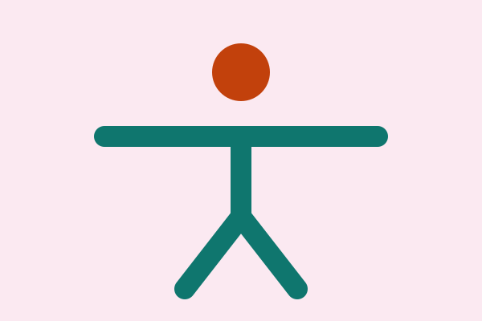

Accessibility Statement
This website is made for everyone, including people with low vision, people who use a keyboard, and people who use screen readers.

What we did
- A skip link at the top of every page jumps straight to the main content.
- Every image has alt text that describes it.
- You can use the whole site with only a keyboard. Press Tab to move and Enter to open.
- Text and background colors have strong contrast, aiming for WCAG 2.2 level AA.
- Forms have clear labels. Required fields are marked.
- Text can be zoomed to 200 percent without losing content.
- Simple, short sentences are used so more people can read easily.
Tell us about a problem
If something is hard to use, please contact us.